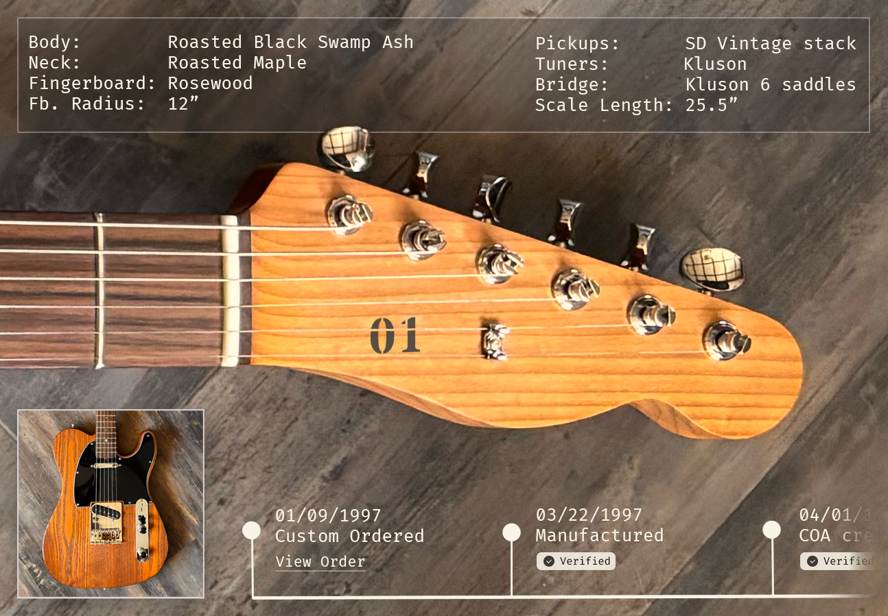

Collections & Auctions
Landmark collections, major sales, and how auctions reshape the value of specific guitars.
A map of important guitars, stories, and provenance.
String Authority charts the guitars, collections, and narratives that define the instrument’s legacy. Alongside verified provenance and market history, you’ll find essays, reflections, and case studies, diving into craftsmanship, community, and the stories behind every instrument.
The Guitar Index focuses on four things: historic collections and auctions, artist instruments, provenance and registries, and the shifting guitar industry.
Landmark collections, major sales, and how auctions reshape the value of specific guitars.
Guitars tied to artists, from one-off stage instruments to high-volume signature runs.
How stories and documentation travel with instruments, and why structured provenance matters.
Mergers, acquisitions, and tech changes that affect how guitars are built, bought, and collected.
Historic auctions can reset price expectations for an entire era of guitars, not just the instruments in the sale.
For collector-grade instruments, the story often becomes as important as originality or specifications.
Provenance is fragile; without structure, details about ownership and modifications are usually lost within one or two ownership changes.
Artist signature guitars increasingly function as cultural collectibles, not just as everyday tools for playing.
The more digital the guitar world becomes, the more players and collectors gravitate toward original, physical artifacts with traceable histories.
Most "famous" guitars trade on mythology and a single murky photograph. Greeny is different.
A verifiable, digital record of an instrument's cultural history that ensures provenance survives market transactions.
Be among the first to help preserve guitar heritage. Share your expertise, contribute to the registry, or simply follow our progress.
We're currently interviewing collectors, dealers, and experts to shape the registry. Tell us about your guitar story.
String Authority is a project by Mariano Rozanski, a software engineer and product leader building tools for guitar provenance, lore, and documentation. Guitar Times is the weekly news digest of String Authority, curating important stories, auctions, and releases from across the guitar world.